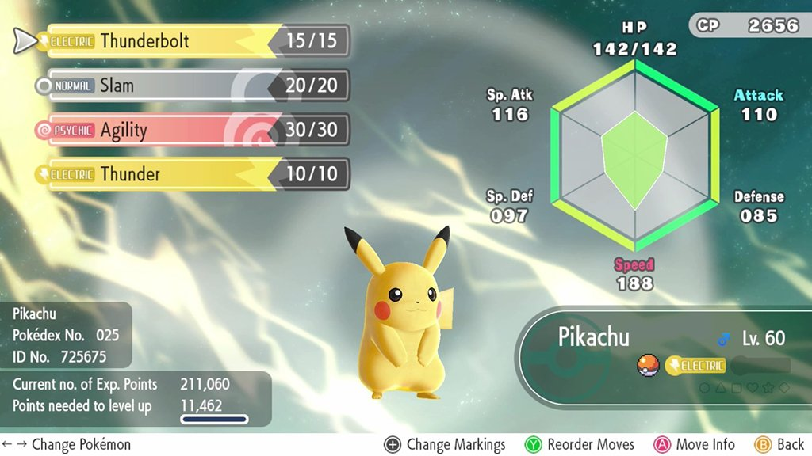
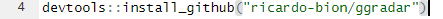
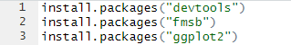

Assignment 5
Make a tutorial on something we did not cover in class
Radar Charts in R.
Radar charts are an important tool when you may want to display multivariate quantitative data. Radar charts are often useful for showing data that is all on the same scale. Tableau has a long, complicated way to make radar charts, but R makes the process super simple and easy to understand. Today, I am going to be walking you through that process. Before getting started, you are going to need 2 things: R and RStudio, both of which can be found by clicking on those blue hyperlinks and following the instructions based on your operating system. The tutorial will be using the Windows Operating System.
Data we will be using.
For this tutorial, I will be going back to my first portfolio assignment, and making a radar chart about the stats of a set of Pokemon. In fact, the Pokemon Company and Gamefreak actually use this chart in their games, so safe to say, it is a pretty good visualization tool.
Step 1: Where to Start
To start, you should open up RStudio and make sure everything is running correctly. Go to "File" in the top right and hover "New File" until you can click on "R Script"

Installing Packages and Using them
In order to do almost anything on R, we need to install code packages. In the box in the top right, you are going to write and run the following code:
install.packages("devtools")
install.packages("fmsb")
!!!IMPORTANT!!! Please run the code as is it given in the code pictures. To do this, just hihglight the code and then hit "Control" + "Enter"
After this, we actually need to tell R that we are using these packages, so we use the "library" command like so:
We have one more package to install and add to our library, "ggradar", but we cannot install that without "devtools"
